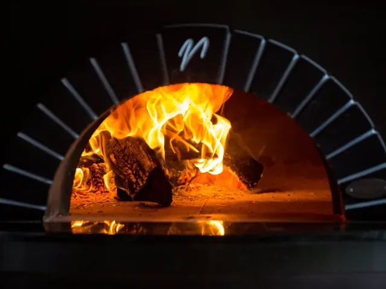
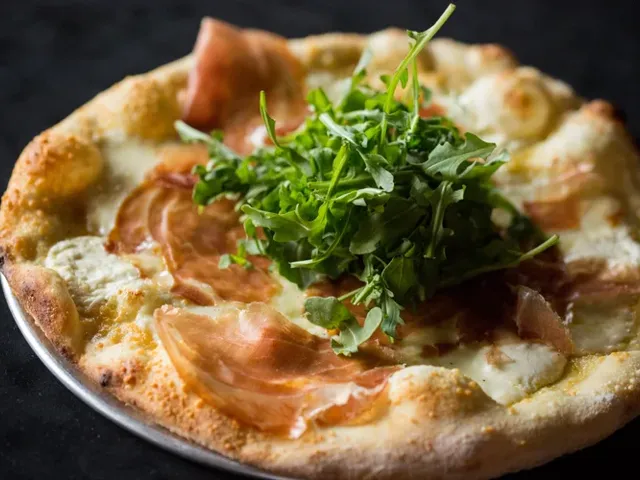
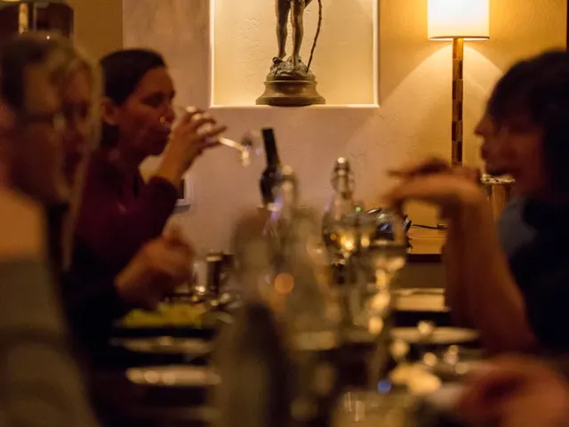

Nothing on the menu matches that. Call 406.730.8767 and ask.
Food
Starters
Cauliflower gf
$18battuto oil, lemon, parsley, chile
Clams in White Wine
$21spanish chorizo, saffron, shallot, garlic, crostini
Calamari Picatta gf
$19lemon, caper, chili flake, parsley
Elk Tartar*
$22seared elk, lemon, capers, red onion, parsley
Meatballs al Forno
$17veal and pork meatballs, pancetta, parmigiano, tomato passato
Char-Grilled Octopus gf
$22potatoes, fresno chili
Warm Rustic Focaccia
$8whipped garlic and chive butter
Food
Salads
Radicchio & Manchego gf
$15cabbage, blood oranges, sesame-orange vinaigrette, fried capers
Caesar Salad
$14romaine lettuce, garlic breadcrumbs, chives, parmigiano
Little Gem Salad
$17baby gem lettuce, grated egg, red onion, bacon vinaigrette, herb breadcrumbs
Beets & Blue gf
$18rogue river blue cheese, red beets, granny smith apple, honey, candied walnuts, frisee, red wine vinaigrette
Food
Wood Fired Pizza
*bianca style: white pizza, no marinara. Gluten free pizza available for an additional $6.
Margherita
$20mozzarella, basil, tomato sauce
Gabbagool
$26hot capocollo, ricotta, pickled fresno, garlic hot honey
Prosciutto and Fig
$28goat cheese, aged balsamic, arugula (*bianca style)
Carbonara
$26bacon, mozzarella, caramelized onion, parmigiano, egg, black pepper
Pepperoni
$22pepperoni, mozzarella, tomato sauce
Mushroom Bianca
$28mixed mushrooms, fontina, mozzarella, sage, olive oil, garlic (*bianca style)
Fennel Sausage
$26burrata, scallion, fresno chili, tomato sauce
Food
Fresh House-Made Pasta
Gluten free pasta available.
Rigatoni alla Vodka
$26’nduja, basil, garlic, shallots, burrata, pepperoni, breadcrumbs
Wild Boar Ragu
$34pappardelle pasta, braised wild boar, red wine, rosemary, sofrito, pecorino
Seasonal Gnocchi
MPplease inquire with your server
Traditional Bolognese
$29pappardelle, pork & veal bolognese, parmigiano
Spaghetti & Meatballs
$28veal and pork meatballs, tomato passato, parmigiano
Chicken & Mushroom Rigatoni
$32mixed mushrooms, marsala cream, parmigiano
Carbonara
$28spaghetti, egg yolk, black pepper, parmigiano
Lasagna
$32italian sausage, tomato passato, bechamel, ricotta, mozzarella, parmigiano
Seafood Pasta
$42tagliatelle, uni butter, shrimp, crab, cauliflower puree, white wine, parsley
Food
Secondi
Roasted Chicken gf
$38anson mills polenta, kale, cippolini onion, mushrooms, mustard chicken jus
Grilled Heluka Pork Chop
$42brined, fennel crusted, peperonata, fingerling potatoes, chimichurri
16oz Prime Ribeye* gf
$62montana angus beef, fingerling potatoes, garlic, rosemary, seasonal vegetable, herb butter, roasted tomatoes, aged balsamic
Fish Special*
MP
gf indicates gluten-free | gluten free pizza & pasta available.
Consuming raw or undercooked meats, poultry, seafood, shellfish, or eggs may increase your risk of foodborne illness. *Indicates items that may be served raw, or undercooked, or contain raw, or undercooked ingredients.
There will be a 2.96% convenience fee added to all credit card transactions.
20% gratuity may be applied to parties of six or more, as well as unsigned credit card receipts.
For efficiency purposes, please limit split checks to 4 per table.



Drinks
Libations
Lychee Martini
$17ketel one vodka, st. germain, lychee puree, lime
Rhubarb Sour
$17capel pisco, rhubarb, hibiscus, lemon, lime
Negroni Macchiato
$17nolet’s gin, campari, vermouth, coffee liquor, espresso, chocolate bitters
Lambo ’Rita
$20abruzzo barrel select double reposado, cointreau, honey, agave, lime, grand marnier
Italian Mule
$16ketel one vodka, orgeat, lemon, ginger beer, disaronno float
Signature Old Fashioned
$16four roses bourbon, nonino amaro, maple, cherry
Bees Knees
$16empress gin, lemon juice, honey simple
Black Manhattan
$19averna amaro, woodford reserve bourbon, angostura bitters, luxardo cherry (“Pat-hattan” with woodford double oak +5)
Grow a Pear
$18plymouth gin, glacier distilling pear liqueur, blasamic glaze, lemon, egg white
Smokin’ Lady
$17xicaru mezcal, passion fruit & ginger syrup, lime, tajin rim (*sub tequila) (make it spicy +2)
Garden Party
$16henricks gin, acqua di cedro, basil, lemon juice
Sicilian Margarita
$15lunazul blanco, orange juice, amaretto, house sour, blood orange coridal
Drinks
Spirit Free
Garden Spritz
$9basil simple, lemon, lime, soda water
Morning Star
$9passion fruit, pineapple, lime, vanilla simple, soda water
Fresa Maria
$9strawberry, lime, ginger beer, lime soda
Wine
Red by the Glass
Montepulciano, La Quercia
Glass $12Bottle $46Abruzzo, Italy
Super Tuscan, Argiano NC
Glass $14Bottle $54Tuscany, Italy
Super Tuscan, Tolaini ‘Al Passo’
Glass $15Bottle $58Tuscany, Italy
Tuscan Blend, Ornellaia ‘Le Volte’
Glass $18Bottle $70Bolgheri, Italy
Nero d’Avola, Contrada Valle
Glass $17Bottle $66Sicily, Italy
Chianti Classico Castello di Bossi
Glass $12Bottle $46Tuscany, Italy
Sangiovese, Antonio Sanguineti
Glass $13Bottle $52Tuscany, Italy
Pinot Noir, Truchard ‘Carneros’
Glass $16Bottle $62Napa, California
Pinot Noir, Argyle ‘Bloom House’
Glass $15Bottle $58Willamette, Oregon
Pinot Noir, Yamhill Vintners ‘Reserve’
Glass $18Bottle $70Willamette, Oregon
Cabernet, Duckhorn Decoy
Glass $15Bottle $58Sonoma, California
Cabernet, Mark Ryan ‘BT Racer’
Glass $19Bottle $74Columbia Valley, Washington
Cabernet, Educated Guess
Glass $20Bottle $78Napa, California
Spanish Blend, Vall Llach Embruix
Glass $19Bottle $74Catalunya, Spain
Wine
White by the Glass
Prosecco, Avissi DOC
Glass $11Bottle $42Veneto, Italy
Soave, Brigaldara
Glass $13Bottle $50Verona, Italy
Pinot Grigio, Cooper Mountain
Glass $13Bottle $50Willamette, Oregon
Pinot Grigio, Girlan
Glass $14Bottle $54Trentino Alto Adige, Italy
Turbiana, Tommasi Le Fornaci
Glass $15Bottle $58Lugana, Italy
Rose, Roseblood d’Estoublon
Glass $16Bottle $62Provence, France
Sparkling Rose, Sauvage
Glass $17Bottle $66New Mexico
Sauvignon Blanc, Astrolabe
Glass $12Bottle $46Marlborough, New Zealand
Sauvignon Blanc, Adler
Glass $16Bottle $62Alto Adige, Italy
Sauvignon Blanc, Ricard ‘Le Petiot’
Glass $16Bottle $62Loire Valley, France
Chardonnay, Duckhorn
Glass $14Bottle $54Sonoma, California
Chardonnay, Hartford Court
Glass $16Bottle $62Russian River, California
Hours & location
| Mon | 5 PM – 9 PM |
|---|---|
| Tue | 5 PM – 9 PM |
| Wed | 5 PM – 9 PM |
| Thu | 5 PM – 9 PM |
| Fri | 4:30 PM – 9:30 PM |
| Sat | 4:30 PM – 9:30 PM |
| Sun | 5 PM – 9 PM |
115 Central Avenue
Whitefish, Montana 59937
406.730.8767
Danielle@abruzzoitaliankitchen.com
Open since December 2017. We cook by hand, from scratch, including all of our fresh pastas and wood fired pizzas. Abruzzo is an OpenTable Diners’ Choice Award Winner.